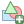
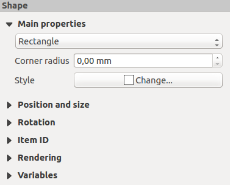
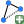
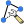
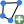
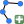
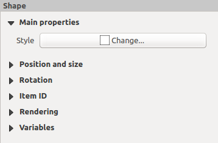
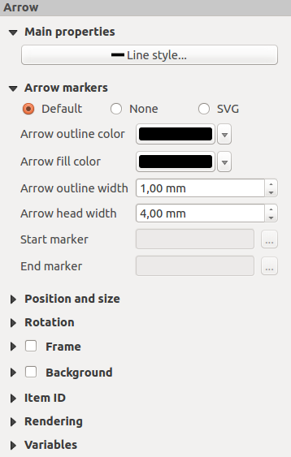

重要
翻訳は あなたが参加できる コミュニティの取り組みです。このページは現在 100.00% 翻訳されています。
18.2.11. Shapeアイテム
QGISには印刷レイアウト上に基本的な図形や複雑な図形を描くためのツールがいくつかあります。
注釈
他の印刷レイアウトアイテムとは異なり、図形の枠や背景色（デフォルトで透明の設定）のスタイルを設定することはできません。
18.2.11.1. 基本的なShapeアイテム
Shape アイテムは、三角形や四角形、楕円といった基本的な図形で地図を装飾するために用いるツールです。 
{kind=link}
{kind=link}
{kind=link}
{kind=link}
注釈
Shift キーを押しながらクリック＆ドラッグで基本図形を描画すると、正方形や円、正三角形を作成できます。
デフォルトのShapeアイテムは、 アイテムプロパティ パネルを使用してカスタマイズすることができます。 アイテムの共通プロパティ の他に、Shapeアイテムには以下の機能があります（ 図 18.66 参照）。

図 18.66 Shapeアイテムプロパティパネル
メインプロパティ グループにはShapeアイテムの種類（ 楕円 、 四角形 または 三角形 ）が表示され、フレーム内で種類を切り替えられます。
高度な シンボル と 色 のセレクタウィジェットを使用して、図形のスタイルを設定できます。
四角形については、 コーナー半径 の値を様々な単位で設定することで、角を丸められます。
18.2.11.2. ノードに基づく図形アイテム
Shapeを追加 ツールを使えば、シンプルな既定の幾何学的アイテム作成できますが、  
{kind=link}
{kind=link}
ノードに基づく図形を追加するには：

ポリゴン（Polygon）を追加 または
ポリラインを追加 ツールを選択します一連の左クリックにより、アイテムのノードを追加します。 Shift キーを押しながらセグメントを描画すると、 45° の倍数に方向が制限されます。
ノードを追加し終えたら、右クリックして図形描画を終了します。
{kind=link}
{kind=link}
アイテムプロパティ パネルで図形の見た目をカスタマイズできます。

図 18.67 ポリゴンノード図形のアイテムプロパティパネル
メインプロパティ では、高度な シンボル と 色 のセレクタウィジェットを使用して、図形のスタイルを設定できます。
ポリラインノードアイテムに対しては、 ラインマーカー の変更ができます。すなわち、
開始／終了マーカーには以下のオプションがあります。
なし ：単なるポリラインを描画します
矢印 ：カスタマイズも可能な、通常の三角形の矢印の頭を追加します
SVG マーカー：
SVGファイルをアイテムの矢印の頭として使用します
矢印のカスタマイズとしては、
矢印のストローク色 ：矢印の頭のストローク色を設定します
矢印の塗りつぶし色 ：矢印の頭の塗りつぶし色を設定します
矢印ストローク幅 ：矢印の頭のストローク幅を設定します
矢印ヘッド幅 ：矢印の頭のサイズを設定します
SVG画像の場合はラインに合わせて自動的に回転します。QGISの既定のSVG画像は、ストロークと塗りつぶし色を対応するオプションで変更できます。カスタムのSVGでは、いくつかのタグが必要となるため、この 説明 に従ってください。

図 18.68 ポリラインノード図形のアイテムプロパティパネル
矢印アイテム
矢印を追加 ツールは、デフォルトで矢印ありとしたポリラインを作成するためのショートカットです。従って、 ポリラインノードアイテム と同様のプロパティと動作を持ちます。
{kind=link}
実際、矢印アイテムは単純な矢印を追加するために使用できます。例えば、2つの異なる印刷レイアウトアイテムの関係を示すような使い方です。ただし、北向きの矢印を作成する場合には、 画像アイテム の利用をまずは考えてみてください。なぜならば、画像アイテムでは .SVG 形式の北向き矢印のセットにアクセスでき、地図アイテムと同期して自動的に回転させることができるからです。
ノードアイテムのジオメトリ編集
ノードベースの図形を編集するための特別なツールとして、 ノードアイテムの編集 ツールが用意されています。このモードでは、ノード上をクリックして選択できます（選択したノードにはマーカーが表示されます）。選択したノードは、ドラッグするか矢印キーを使用して移動できます。さらに、このモードでは既存の図形にノードを追加することもできます。セグメント上をダブルクリックすると、その場所にノードが追加されます。最後に、現在選択しているノードを削除するには、 Del キーを押します。